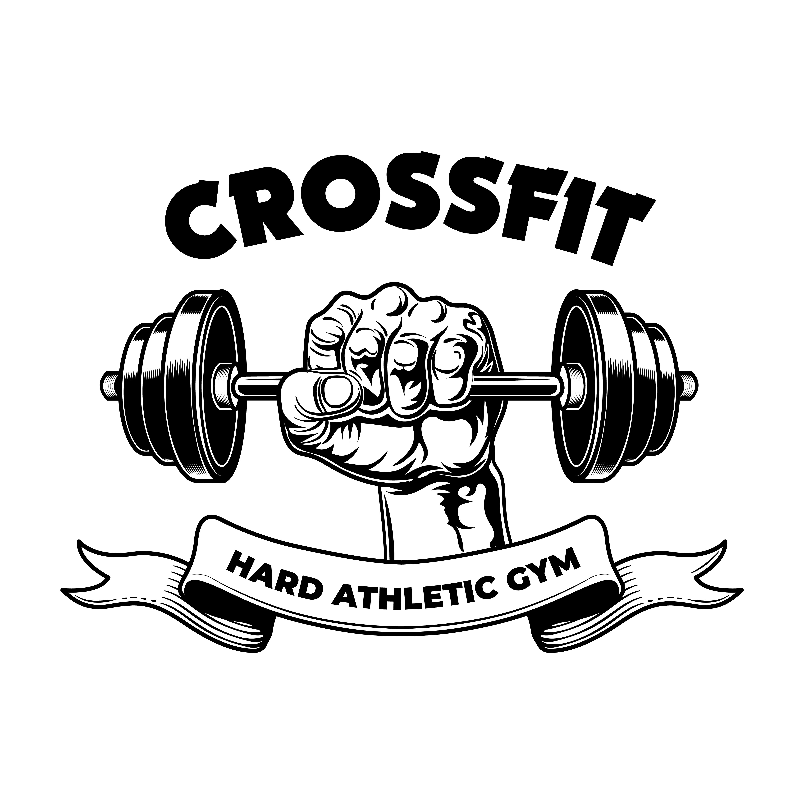

Since I was young, I have always been very skinny. However, my body type never stopped me from pursuing my passion for sports. In fact, I played football and was really good at it.
As I got older, I became determined to build more muscle and develop my body. That's when I turned to gymnastics, as a way to challenge myself and prove that I could overcome any physical limitations. I saw it as a revenge against the skinny phase that once held me back.
Gymnastics was not easy, but I worked hard every day to improve. I was dedicated to the sport and determined to succeed. Eventually, my hard work paid off, and I was able to accomplish incredible feats on the mat.
Today, I continue to push myself to new heights. I have developed a strong mindset and unwavering determination, and I apply these qualities to everything I do. I strive to inspire others to pursue their passions, no matter what obstacles they may face.
I believe that if you set your mind to something, you can achieve it. With hard work, dedication, and perseverance, anything is possible.
